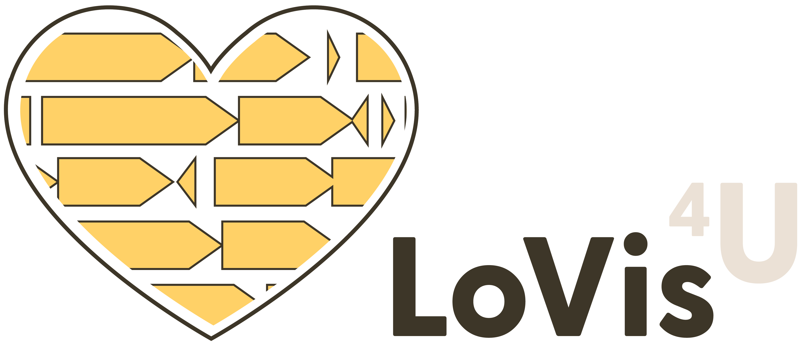
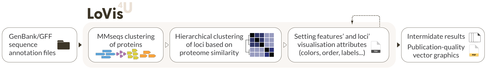
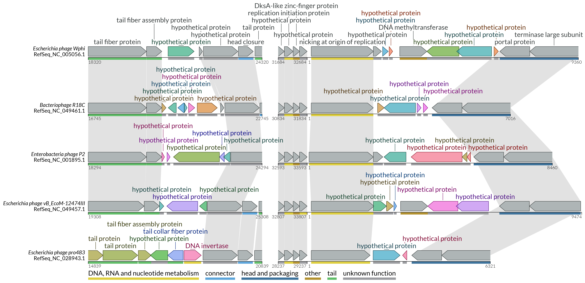

{kind=link}
Description
LoVis4u is a bioinformatics tool for Locus Visualisation.
Supported input: Genbank, gff3 with sequence
Supported output: Static vector graphics (pdf)
Programming language: Python3
OS: MacOS, Linux
Python dependencies: biopython, bcbio-gff, scipy, configs, argparse, pandas, distinctipy, matplotlib, seaborn, reportlab
Python version: >= 3.9
OS-level dependencies: MMseqs2 (included in the package)
License: WTFPL
Version: 0.0.7 (July 2024)
Pipeline: 
{kind=link}
Visualisation example: 
{kind=link}
Installation
- LoVis4u can be installed directly from pypi:
- The development version is available at github :
git clone https://github.com/art-egorov/lovis4u.git
cd lovis4u
python3 -m pip install --upgrade pip
python3 -m pip install setuptools wheel
python3 setup.py sdist
python3 -m pip install -e .
! If you're a linux user, run lovis4u --linux post-install command once to update paths in the premade config files that set by default for MacOS users.
Reference
If you find lovis4u useful, please cite:
Artyom. A. Egorov, Gemma C. Atkinson, lovis4u: ..., ...
Contact
Please contact us by e-mail artemdotegorovATmeddotludotse or use Issues to report any technical problems.
You can also use Discussions section for sharing your ideas or feature requests!
Authors
LoVis4u is developed by Artyom Egorov at the Atkinson Lab, Department of Experimental Medical Science, Lund University, Sweden. We are open for suggestions to extend and improve LoVis4u functionality. Please don't hesitate to share your ideas or feature requests.